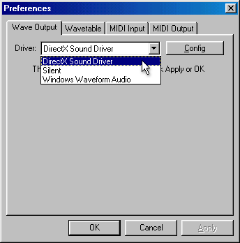

Wave Output
is the first tab in the user Preferences tab (
View/Preferences
). This
is where you must choose your audio driver for all output in Aldrin. Default,
the following 3 options should now be available via the Driver drop-down
box located in the upper-center of the window.

|
Driver
|
Description
|
|
DirecX Sound Driver
|
This driver is meant for systems running
Windows 9x and 2000 systems with DirectX compatible audio cards. This
driver includes several
options
to optimize it on your system.
|
|
Silent
|
This driver is used when it is important
to have no audio at all. This is most often used when recording a
song to wave file.
|
|
Windows Waveform Audio
|
This driver is meant for Windows NT and
legacy audio cards which lack support for the DirectX audio standard.
It also has a few
options
to help optimize it on your system.
|